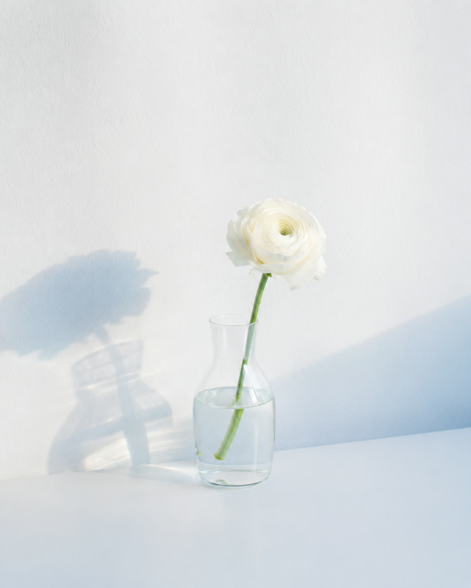

01
恋愛フェーズ診断
6つの質問で、今のあなたの恋愛フェーズを「夜から朝へ」の5段階で見つめるセルフチェック。すべての入り口になる診断です。
Pale Hourは、恋愛を教えるだけの場所ではありません。
恋愛の中で揺れる感情を見つめ、
自分の境界線を知り、
自分らしく生きていくための時間を届けます。
恋愛から、自立へ。
恋愛から、キャリアへ。
恋愛から、自分へ。
感情を否定せず、心の土台を整える
自分の本音や、繰り返す恋愛の癖に気づく
誰かの正解ではなく、自分の意思で選ぶ
恋愛の先のキャリアや人生まで整えていく
6つの質問で、今のあなたの恋愛フェーズを「夜から朝へ」の5段階で見つめるセルフチェック。すべての入り口になる診断です。
診断結果のタイプごとに、苦しくなりやすい理由と、最初に整えるポイントをまとめた無料Note。
恋愛で自分を見失う仕組みと、自分軸へ戻る手順を体系的にまとめた有料Note。購入者には特典として無料個別相談をご案内します。
少人数で、恋愛のその先——自分の軸・境界線・これからの選択——を整えていく時間。開催時期はLINEでご案内します。
お客様の声は現在、掲載準備中です。
プログラムにご参加いただいた方の実際の声を、ご本人の許可を得たうえで掲載します。



はい、無料です。6つの質問に答えるだけでご利用いただけます。
約1分です。スマートフォンからそのままお答えいただけます。
はい。はじめての方こそ、まずは無料の診断から。今の自分の状態を言葉にするところから始められます。
有料Note「恋愛の教科書」などをご用意しています。無料の診断やNoteだけのご利用でも問題ありません。無理なおすすめは行いません。
いいえ。診断結果は医学的・心理学的な診断ではなく、自己理解のためのセルフチェックです。